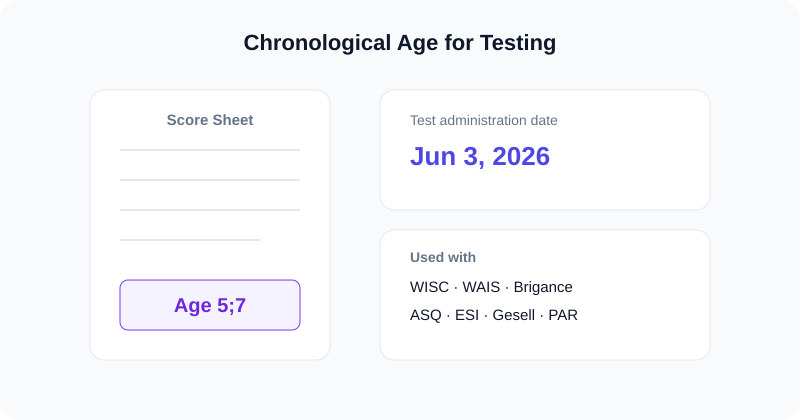

For SLPs, psychologists & educators
Chronological Age Calculator for Testing
A free chronological age calculator for testing that returns exact age in years and months from a date of birth and the test administration date — ready to drop onto any standardized score sheet.

Key takeaways
- For testing, chronological age is measured to the test administration date.
- Report it in the years;months format the norm tables expect.
- This chronological age calculator for testing is free and keeps client data private.
Why test age must be exact
Normed assessments compare a client's raw score against peers of the same age. If the chronological age is off by even a month, you may read the wrong norm column and report an inaccurate standard score or percentile. In speech-language pathology and psychology practice, age is recorded as years;months (for example, 6;2) and computed to the day of testing — which is exactly what this calculator produces.
Entering the test (administration) date
Set the reference field to the day the assessment is actually administered, not today's date if they differ. The tool then returns the client's exact age on that day. If you also need the figure expressed only in months, use the age in months calculator.
Instruments that use chronological age
| Instrument | Domain | Age format |
|---|---|---|
| WISC / WAIS (Wechsler) | Cognitive / IQ | Years;months |
| Brigance | Early childhood / academic | Years;months |
| ASQ | Developmental screening | Months (often corrected for prematurity) |
| ESI | Early screening | Years;months |
| Gesell | Developmental | Years;months |
| PAR instruments | Various | Years;months |
For infants born preterm, several screeners use corrected age rather than chronological age — check the manual for the specific test. Professional guidance on assessment is available from the American Speech-Language-Hearing Association (ASHA).
A typical SLP workflow
- Enter the client's date of birth and the administration date above.
- Copy the years;months figure onto the protocol.
- Use it to select the correct norm table and convert raw scores.
- Print the result to attach to the file if your setting requires it.
Frequently asked questions
What date do I use for chronological age in testing?
Use the actual test administration date as the reference. Chronological age for testing is the time between the date of birth and the day the assessment is given, in years and months.
Which tests need chronological age in months?
Most normed assessments — WISC, WAIS, Brigance, ASQ, ESI, Gesell and PAR instruments — use chronological age in years;months to select the right norm table.
Should I round the age?
Follow the test manual. Many tests do not round; they place the client into a band based on the exact years;months value.